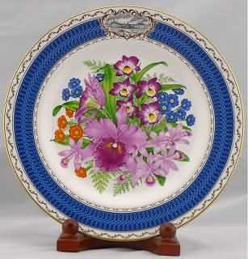
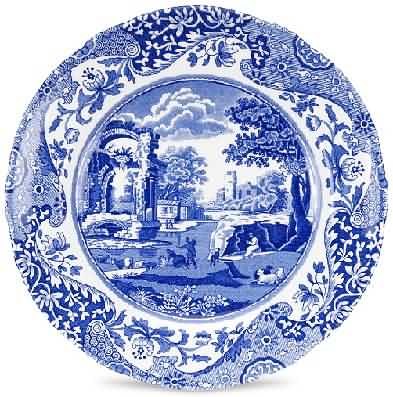

英国Spode斯波德
 斯波德Spode在历史上的名声因为他在1794年发明了美丽的骨瓷，所以Spode 才是英国四大陶瓷品牌中骨瓷技术最精湛的两百年名瓷。它生产出来的产品，不仅式样繁多，外观优美，典雅，而且产品工艺精湛。
斯波德Spode在历史上的名声因为他在1794年发明了美丽的骨瓷，所以Spode 才是英国四大陶瓷品牌中骨瓷技术最精湛的两百年名瓷。它生产出来的产品，不仅式样繁多，外观优美，典雅，而且产品工艺精湛。
Spode 的历史开始于1740年，在Josiah Spode七岁那一年，他的父亲去逝后，他到了一家英国陶瓷工厂工作.生于陶瓷业最为创新的时期之一，这个人生的新开始也开启了Spode 终生的成就及其独一无二的创造力。Spode 一世拜师于当时最有名望的陶瓷家 Thomas Whieldon在 1754 年他成为一个能独当一面的陶艺家之前，他跟着Thomas Whieldon 学习了五年并且获得无价的学习经验。Spode 一世之后从事陶瓷工作，也与各家陶瓷厂合作直到 1767 年他建立了属于自己的事业。
Spode 的事业在Spode一世派遣他的儿子到伦敦推动Spode 名号，开始拓展开来。这是一个为了能更清楚了解客人的需求而施行的策略性开发也相对的，让Spode 的事业更加成功.毫无疑问的Spode 最著名的餐具特色是对蓝与白的运用。这个创新在 1784年达到高峰，是陶瓷史上一个重要时刻。当时是由Josiah Spode一世亲自负责设计及主导，其将手刻铜制盘子上特有的鲜明蓝色藉由釉下彩的技术在陶瓷上呈现。那个时期刚好进口茶叶税戏剧性的降低，因而人们对茶具的需求大大的增加，也决定了 Spode 这个创新的成功。
身为创新的先锋 Spode在历史上的名声因为完美的骨瓷(Bone China)制成配方而更见响亮。 在1797年他去逝前，Spode 创立了史上最白且最透明的古瓷器，是世界上罕见的质量，命名为"Stoke China"这个创新不仅确立了Spode 家族的成功，自1806年起第一次为 HRH韦尔斯王子委任制作瓷器后，Spode二世又陆续赢得了五次为皇家服务的机会。
在1797年他去逝前，Spode 创立了史上最白且最透明的古瓷器，是世界上罕见的质量，命名为"Stoke China"这个创新不仅确立了Spode 家族的成功，自1806年起第一次为 HRH韦尔斯王子委任制作瓷器后，Spode二世又陆续赢得了五次为皇家服务的机会。
直到今日Spode 工厂仍旧维持着传统与创新，也始终未曾搬离过它的发迹地Stoke.身为不变的创新者并受超过两百年的历史传承，Spode 至今仍致力于开发独一无二的新设计，新潮流及展示高质量的艺术品。它的蓝白瓷器及骨瓷到今日仍在持续的在生产，且自写入历史后，也成为最具收藏价值的收藏品之一。
Spode系列中最经典的系列--- Blue Italian 意大利蓝。设计完成于1810年的 Blue Italian 采用把釉下蓝烧在陶器上的工艺，描绘了意大利罗马附近某个古老的小城堡外人们甜美安逸的田园生活景象。画面上恬美优雅的人物构图，万千流动变幻的空气气韵令 Blue Italian 成为Spode的传世经典之作。
据说，意大利蓝系列的花纸全球只有一家供应商才能达到如此水准。斯波德的美丽的蓝色和白色的收集在1816开始和他的制造自从。蓝色意大利具有精细第十八世纪伊万里东方边境包括现场灵感来自意大利乡间。这个蓝色的意大利六边形花瓶让一个美丽的核心的穿着表。